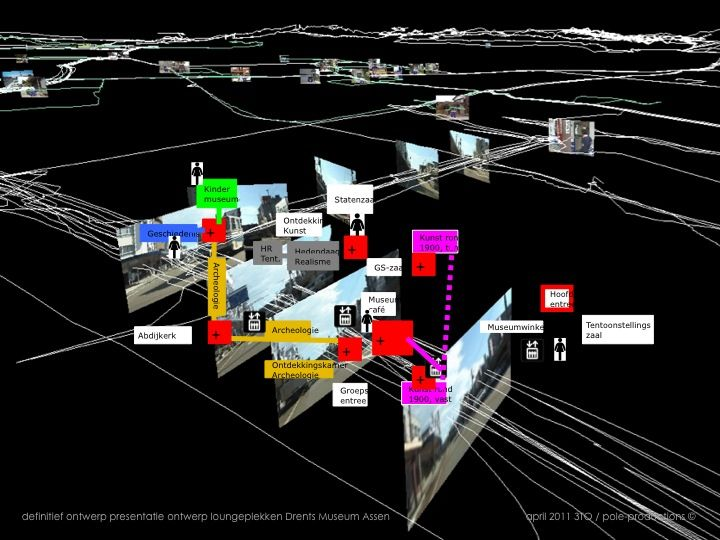

Journal 4
Hito Steyerl's A Sea of Data, dirty data and seeing patterns that aren't there

Not a data problem
This week's reading was Hito Steyerl's essay A Sea of Data: Apophenia and Pattern (Mis-)Recognition. I expected it to be about surveillance in the usual sense, about who collects our data and who gets access to it. But the essay quietly moves past that. Agencies like the NSA already have more data than they could ever look at. Collecting it is no longer the hard part, and neither is access. The real problem is turning all of it into information, deciding what is signal and what is noise. Having data is not the same as knowing anything. That shift, from gathering to filtering, changed how I read the rest of the text.
Everyone's cutting corners
What stood out to me is how much of this filtering depends on shortcuts, and how they happen on every side. Ordinary people cut corners too: Steyerl mentions a survey where a majority of people admitted to deliberately entering false information online, a small, quiet way of refusing to be counted. Analysts cut corners by throwing out results that don't fit what they expected, like the consulting firm that treated a real group of wealthy teenagers as an error. And the systems cut corners in more troubling ways. A program meant to find militants through phone records was reportedly tested on the same small set of known cases it had learned from, a shortcut that could mean thousands of people being labelled wrongly. No one in the chain is doing the slow, careful work, yet the results are treated as reliable.
The mess is not a flaw in the data. It is what the data actually looks like.
Dirty data
Steyerl's idea of dirty data stayed with me most. We tend to imagine data as clean and neutral, something that just needs to be organised. But real data is full of mistakes, fake answers, missing entries and people who don't fit the categories they're given. As she puts it, "dirty data is simply real data." The mess is not a flaw in the data. It is what the data actually looks like. The problem is what happens when that mess gets cleaned up. Someone has to decide what counts as an error, and the people who get filtered out are often the ones who were already on the margins, the anomalies the system was never built to see.
Seeing faces in the noise
The essay is built around apophenia, the tendency to see patterns in random information, like finding shapes in clouds or faces in a wall. Steyerl does this deliberately with a leaked image of pure noise, reading it as water. Then she turns it around: if she can find a pattern in nothing, so can the analyst, and so can the algorithm. Google's Deep Dream images show this plainly, with networks finding eyes and dogs in static because that is what they were trained to look for. A pattern says as much about the person or system looking as it does about what is there. That connects to something I keep returning to in these entries: the systems behind what we see are never neutral. Working with code, even at my beginner level, I am starting to understand how much depends on what you tell the machine to look for. Steyerl's point is that when those projections are treated as facts, the consequences land on real people.